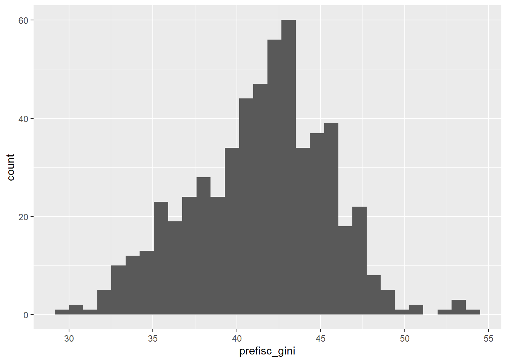
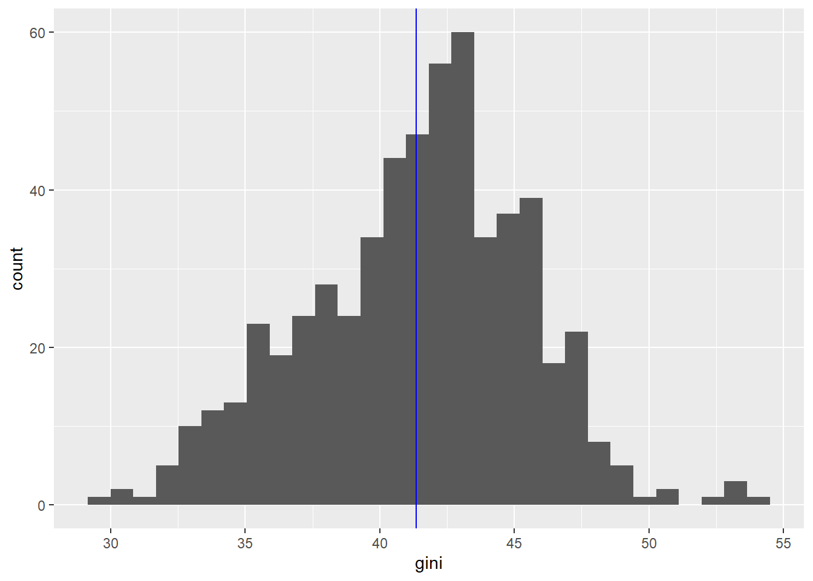
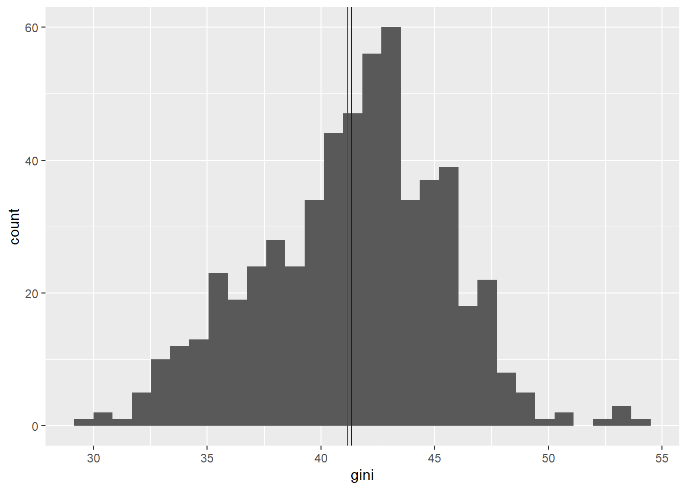

library(qrcode)
qr_code('https://artur-baranov.github.io/nu-ps403-ds') |>
plot()Data Exploration
Week 1
Before we start
- Any questions?
Agenda
Organizing working directory
Adapting to R and RStudio
Exploring Data
Subsetting data
Finding Data
Let’s explore Comparative Political Dataset. It consists of political and institutional country-level data. Take a look on their codebook.
Today we are working with the following variables.
year- year variablecountry- country variableprefisc_gini- Gini index. What is it?eu- member states of the European Union identificationopenc- Openness of the economy (trade as % of GDP)poco- post-communist countries post-communist countries identification
Now, let’s load two libraries: tidyverse for data analysis and readxl to work with excel files in R. Likely you have both libraries. But if you don’t, do it using install.packages(). Run it only once!
library(tidyverse)
library(readxl)
cpds = read_excel("data/cpds.xlsx")Data Exploration
How many observations (rows) do we have in the data (nrow())?
nrow(cpds)[1] 1866How many variables (columns) the data has (ncol())?
ncol(cpds)[1] 335Alternatively, we can call it dimension (dim()).
dim(cpds)[1] 1866 335We have a lot of variables in the data, so printing the variables names would be tricky. This is the point where it is better to use the codebook. However, you can print, say, first couple of variables combining names() function, pipe (%>%) and head().
names(cpds) %>%
head()[1] "year" "country" "countryn" "iso" "iso3n" "cpds1" How does the data look like? Using head() let’s present first rows to get the sense. What is NA?
head(cpds)# A tibble: 6 × 335
year country countryn iso iso3n cpds1 poco eu emu gov_right1
<dbl> <chr> <dbl> <chr> <dbl> <dbl> <dbl> <dbl> <dbl> <dbl>
1 1960 Australia 1 AUS 36 1 0 0 0 100
2 1961 Australia 1 AUS 36 1 0 0 0 100
3 1962 Australia 1 AUS 36 1 0 0 0 100
4 1963 Australia 1 AUS 36 1 0 0 0 100
5 1964 Australia 1 AUS 36 1 0 0 0 100
6 1965 Australia 1 AUS 36 1 0 0 0 100
# ℹ 325 more variables: gov_cent1 <dbl>, gov_left1 <dbl>, gov_party <dbl>,
# gov_new <dbl>, gov_gap <dbl>, gov_chan <dbl>, gov_right2 <dbl>,
# gov_cent2 <dbl>, gov_left2 <dbl>, gov_right3 <dbl>, gov_cent3 <dbl>,
# gov_left3 <dbl>, gov_sup <dbl>, gov_type <dbl>, year_01 <dbl>,
# country_01 <chr>, elect <dttm>, vturn <dbl>, social1 <dbl>, social2 <dbl>,
# social3 <dbl>, social4 <dbl>, social5 <dbl>, social6 <dbl>, social7 <dbl>,
# social8 <dbl>, social9 <dbl>, leftsoc1 <dbl>, leftsoc2 <dbl>, …Describing data
Quite often, to convey how your data looks, we present descriptive statistics. Let’s go through them. Explore the distribution of Gini below. In the What is the minimum value? What is the problem?
min(cpds$prefisc_gini)[1] NAWhat is the maximum value?
max(cpds$prefisc_gini, na.rm = TRUE)[1] 54.1Now, calculate the average.
mean(cpds$prefisc_gini, na.rm = TRUE)[1] 41.36394Alternatively, we can present the most used descriptive statistics all together using summary() function. Theoretically, the variable ranges from 0 (perfect equality) to 100 (perfect inequality)
summary(cpds$prefisc_gini) Min. 1st Qu. Median Mean 3rd Qu. Max. NA's
29.60 38.70 41.85 41.36 44.17 54.10 1292 Explore the distribution of Gini below. What can we observe? Pay attention to aes() argument.
ggplot(cpds) +
geom_histogram(aes(x = prefisc_gini)) `stat_bin()` using `bins = 30`. Pick better value with `binwidth`.Warning: Removed 1292 rows containing non-finite outside the scale range
(`stat_bin()`).
Choosing variables
Let’s subset the variables we have outlined for the ease of working with data. We can choose variables using select().
cpds_subset = cpds %>%
select(year, country, prefisc_gini, eu, openc, poco) Now, let’s rename() the Gini variable so it’s more straightforward.
cpds_subset = cpds_subset %>%
rename(gini = prefisc_gini)Let’s see if it worked out!
names(cpds_subset)[1] "year" "country" "gini" "eu" "openc" "poco" Conditional Subset
Sometimes we need to work not only with specific variables, but also with specific observations. For example, let’s check how many observations we have for post-communist countries (poco). This is a sort of subgroup within our data.
cpds_subset %>%
filter(poco == 1) %>%
nrow()[1] 345And how many observations there are for eu countries?
...Now, trickier. There are logical operators. What about the observations that are post communist AND part of the EU? More formally, hopefully you remember it from mathcamp, we want \(\text{poco} \cap \text{eu}\).
cpds_subset %>%
filter(poco == 1 & eu == 1) %>%
nrow()[1] 194How about \(\text{POCO} \cup \text{EU}\)? Use OR (|) operator instead of &.
...And if you want to record the data, don’t forget to save it to another object! E.g., cpds_eupoco.
cpds_eupoco = cpds_subset %>%
filter(poco == 1 & eu == 1) Let’s see the result.
cpds_eupoco %>%
head()# A tibble: 6 × 6
year country gini eu openc poco
<dbl> <chr> <dbl> <dbl> <dbl> <dbl>
1 2007 Bulgaria NA 1 124. 1
2 2008 Bulgaria NA 1 125. 1
3 2009 Bulgaria NA 1 92.7 1
4 2010 Bulgaria NA 1 104. 1
5 2011 Bulgaria NA 1 118. 1
6 2012 Bulgaria NA 1 125. 1But we will need this object for the rest of the script, so feel free to remove it from the environment.
rm(cpds_eupoco)Creating a new variable
Let’s create a new variable, above median openness of the economy (abopen). Once again, openc is a trade openness: % of GDP as trade. We use two functions here: mutate() function to create a new variable or amend existing one. Then, we use ifelse() which is a bit messy – but getting through it would pay off a lot in the long term. Take a moment to make sense of what is going on.
cpds_subset = cpds_subset %>%
mutate(abopen = ifelse(openc >= median(openc, na.rm = TRUE), 1, 0))Now, let’s calculate the *probability** of being above the median in openness to trade, given that a country is post-communist. We need to aggregate the data. Let’s leave only post communist countries in data using filter(), and then count() trade openness outcomes: 0 being below median, 1 being above median.
cpds_subset %>%
filter(poco == 1) %>%
count(abopen)# A tibble: 3 × 2
abopen n
<dbl> <int>
1 0 39
2 1 273
3 NA 33Which is
\[ P = \frac{\text{Number of favorable outcomes}}{\text{Total number of outcomes}} = \frac{273}{273+39} = 0.875 \]
Let’s double-check. This is a basic (and somewhat inaccurate, given the nature of the data) way of thinking about probability, but it’s quite helpful for building intuition
273 / (273 + 39)[1] 0.875Extra: Sampling and Loops
We have covered sampling from the data during the mathcamp - but this would be useful to go through it again.
Let’s briefly reproduce logic of sampling. Say, we know the distribution of Gini, and we know its average.
gini_distribution = ggplot(cpds_subset) +
geom_histogram(aes(x = gini)) +
geom_vline(xintercept = mean(cpds_subset$gini, na.rm = TRUE),
color = "blue")
gini_distribution`stat_bin()` using `bins = 30`. Pick better value with `binwidth`.Warning: Removed 1292 rows containing non-finite outside the scale range
(`stat_bin()`).
Get through the code step-by-step. We are creating an empty dataframe sample_averages, which records averages of the sampled data.
set.seed(12)
sample_averages = data.frame()
for(i in 1:100){
temporary_sample <- sample_n(cpds_subset, size = 50) # sample 50 observations
temporary_sample_average <- mean(temporary_sample$gini, na.rm = TRUE) # calculate the sample average
sample_averages <- rbind(sample_averages, temporary_sample_average) # add the sample average to the df
}
colnames(sample_averages) = "average"
head(sample_averages) average
1 40.08571
2 40.68750
3 41.98571
4 40.45000
5 40.78182
6 42.63889Let’s plot the average on the same graph. Repeat the process by increasing the number of iterations in the loop to 1000.
gini_distribution +
geom_vline(xintercept = mean(sample_averages$average, na.rm = TRUE),
color = "red") `stat_bin()` using `bins = 30`. Pick better value with `binwidth`.Warning: Removed 1292 rows containing non-finite outside the scale range
(`stat_bin()`).